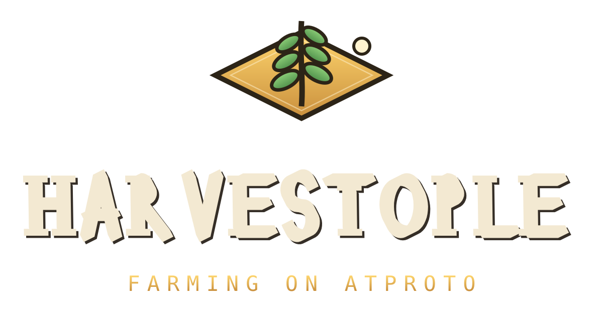

80 REAL CROPS · SEVEN METALS · A COUNCIL THAT GRANTS WISHES
Your whole farm is one com.minomobi.farm.plot record in your own PDS — no servers, no
wipes, sign in with Bluesky. Wish a feature from the town hall and the council builds it on
the testing table within the hour, credited to you on the town ledger.
Wordmark typeface rolled by Roll (seed sown-under-signs, CC0);
beat synthesized in-house, sample-free. The edit machine that cut this trailer runs live in your browser.